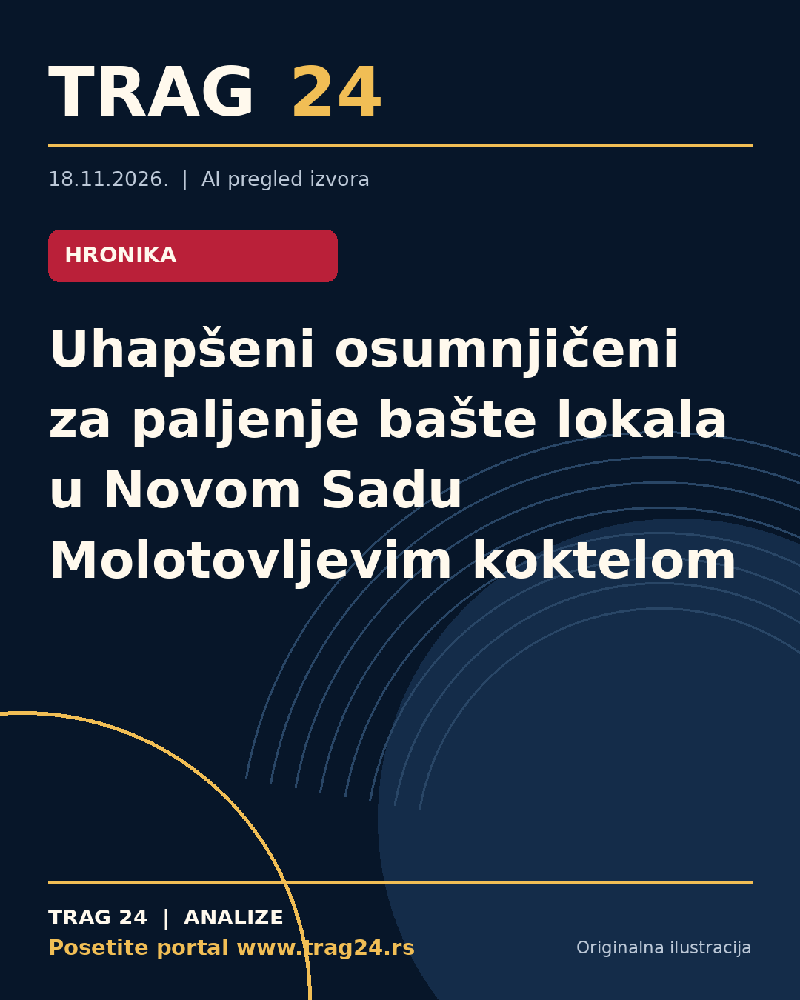

Uhapšeni osumnjičeni za paljenje bašte lokala u Novom Sadu Molotovljevim koktelom

ŠTA SE DOGODILO
Dvojica Beograđana uhapšena su zbog sumnje da su 5. novembra Molotovljevim koktelom zapalili zastakljenu baštu ugostiteljskog objekta na Bulevaru patrijarha Pavla u Novom Sadu. Prema policijskim navodima, osumnjičeni su razbili staklo na bašti i ubacili Molotovljev koktel, što je izazvalo požar. Osumnjičeni su A.I. (20) i Š.B. (23), koji se terete za teško delo protiv opšte sigurnosti u vezi sa izazivanjem opšte opasnosti.
HRONOLOGIJA
Do požara je došlo u noći između 4. i 5. novembra. Ekipa policije iz Novog Sada ubrzo je pokrenula istragu i u saradnji sa nadležnim tužilaštvom, u roku od nekoliko dana pronašla i uhapsila osumnjičene. Zadržavanje osumnjičenih je određeno na 48 sati, nakon čega će biti privedeni nadležnom tužilaštvu. Nije precizirano da li je u toku istraga utvrdila motive i eventualne saučesnike.
ŠTA NAVODE IZVORI
Svi izvori se slažu da su uhapšeni dvojica muškaraca iz Beograda, A.I. i Š.B., i da su oni osumnjičeni za paljenje bašte lokala Molotovljevim koktelom. Policija potvrđuje da su razbili staklo i izazvali požar na ugostiteljskom objektu. Dodatno, N1 navodi da je restoran Piccante, čija je bašta zapaljena, delom u vlasništvu poznatog biznismena Nenada Novakovića, što ostali izvori ne pominju.
ŠTA JE POTVRĐENO
Potvrđeno je hapšenje dvojice osumnjičenih zbog sumnje da su upotrebom Molotovljevog koktela izazvali požar na bašti lokala u Novom Sadu. Takođe, potvrđeno je razbijanje stakla kao način ulaska u baštu i da se postupak vodi kao teško delo protiv opšte sigurnosti i izazivanje opšte opasnosti. Postoji zvanična potvrda o pritvoru odnajviše 48 sati i planiranom privođenju tužilaštvu.
ŠTA NIJE POTVRĐENO
Nije potvrđeno zbog čega su osumnjičeni izvršili ovaj čin, odnosno njihove moguće motive. Nisu potvrđene informacije o eventualnim saučesnicima ili širem kriminalnom planu. Takođe, nisu dostupni detalji o veličini štete nastale požarom ili o stepenu ugroženosti ljudi ili objekata. Ne postoji potvrda o konačnim ishodima postupka ili o eventualnim izjavama okrivljenih.
ŠTA OSTАJE OTVORENO: Ostaje nejasno šta je motiv behind paljenjem bašte i da li se radi o izolovanom incidentu ili o delu većeg šireg događaja. Takođe, ostaje otvoreno pitanje da li će istraga otkriti dodatne detalje ili druge osobe umešane u slučaj. Nije poznato da li su svi dokazi prikupljeni i kakav je status postupka u nadležnom tužilaštvu.
Izvori
- https://n1info.rs/vesti/uhapseni-osumnjiceni-za-paljenje-baste-lokala-u-novom-sadu-razbili-staklo-i-ubacili-molotovljev-koktel/
- https://insajder.net/prenosimo/uhapseni-osumnjiceni-da-su-molotovljevim-koktelom-zapalili-bastu-lokala-u-novom-sadu
- https://www.kurir.rs/crna-hronika/10165884/policija-u-novom-sadu-uhapsila-osumnjicene-za-paljenje-baste
Ova analiza je pripremljena uz pomoć veštačke inteligencije na osnovu javno dostupnih izvora. Navodi izvora nisu nužno nezavisno potvrđeni.